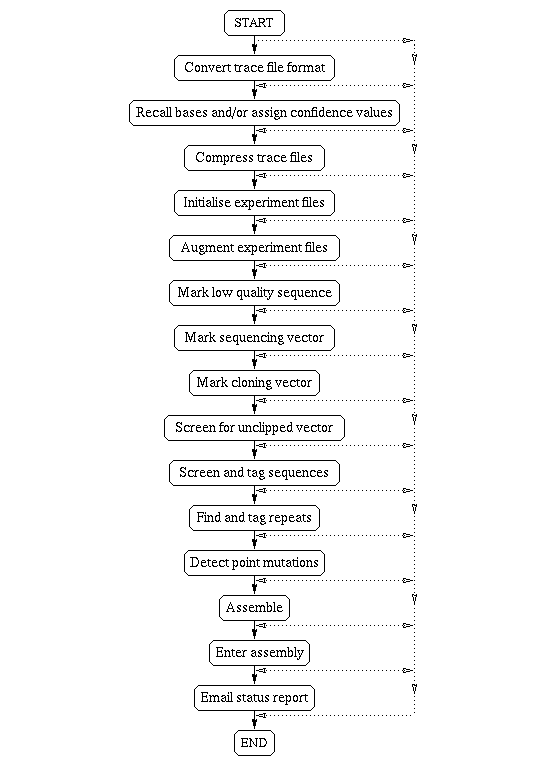

Gap4 stores the data for an assembly project in a gap4 database. Before being entered into the gap4 database the data must be passed through several steps via pregap4. The range of tasks that can be peformed using pregap4 are shown schematically in the following figure.

The package can handle data produced by a variety of sequencing instruments, and also data entered using digitisers or that has been typed in by hand. One of the first steps is to convert trace files, such as those of ABI, which are in proprietary format, to SCF files (see section SCF introduction).
Next, as originally put forward in Bonfield,J.K. and Staden,R. The application of numerical estimates of base calling accuracy to DNA sequencing projects. Nucleic Acids Research 23, 1406-1410 (1995) (see section The use of numerical estimates of base calling accuracy), if they are not already included in the files, base call confidence values are calculated, and are normally stored in the reading's SCF file.
Next the base calls are copied from the trace files to text files known as Experiment files (see section Experiment files).
Note it is also possible to enter sequence readings in the form of FASTA files for use at this stage of the processing, in which case they will be automatically converted to Experiment file format.
All the subsequent processes operate on the Experiment files.
Experiment file format is similar to that of EMBL sequence entries in that each record starts with a two letter identifier, but we have invented new records specific to sequencing experiments. Gap4 can make use of information about readings which may not be contained within the raw data files, such as sequencing chemistry and whether it is a forward or reverse reading. Gap4 will work without this information, but at a reduced level. For instance knowing which forward and reverse readings belong together allows gap4 to check the validity of assembly and for automatic ordering of contigs.
One of pregap4's next tasks is to augment the Experiment files to include data about the chemistry, vectors, primers and templates used in the production of each reading, and if necessary it can extract this information from external databases (see section Information Sources), or via local reading name conventions (see section Pregap4 Naming Schemes). Once the Experiment file for a reading contains all the necessary information the remaining processing programs can be used in turn to analyse the data.
First the reading is marked at both ends to define the range of reasonable quality base calls (see section Quality Clip).
Then the reading is searched for the presence of sequencing vector at the 5' end 3' ends (see section Sequencing Vector Clip).
Next the sequence is checked for the presence of "cloning" vector, i.e. non-sequencing vectors, such as those of BACs (see section Cloning Vector Clip).
The final check of this type is to screen the reading for any vector that may have been missed in the previous searches (see section Screen for Unclipped Vector).
The next check is to screen the reading for any set of sequences which it may be contaminated by, such as E. coli (see section Screen Sequences).
Note that vector sequence files are normally stored in the package vectors directory/folder. If a file of vector file names is used the vector sequences can also be stored in its directory/folder. Files of file names and vector-primer files can also contain environment variables to define the location of vector files.
Vector_primer files, vector sequence files and files of file names must be stored in plain text files (see section Vector_primer Files), (see section Vector sequence format).
Pregap4 is usually used non-interactively once the modules have been configured, but some groups prefer (or have the time) to check the data by eye using the program trev (see section Trev) at this stage.
Another option is to search the readings for families of known repeats (see section Tag Repeats). This will tag any regions which are found to match known repeats.
Some groups are using the package for mutation studies and the final pregap4 option, prior to assembly is to use the mutation scanner program (see section Introduction to mutation detection) to search the readings for mutations (see section Mutation Scanner.
Pregap4 can also be used to assemble the readings into a gap4 database (see section Gap4 Shotgun Assembly), or to assemble the readings using an external assembly engine such as FAKII (see section FakII Assembly), and then to enter that assembly into a gap4 database (see section Enter Assembly into Gap4).
It is unlikely that any particular user will want to employ all of these options and one of pregap4's modes of use is to enable users to configure the program for their work (see section Configuring Modules). Not only can they select which tasks should be performed, and which of the alternative programs ("modules") should be used for them, but also the order in which they are applied. Although it is very rarely a problem, this high level of flexibility comes at a price in the current version of pregap4: pregap4 does not include code to check on the logicality of the configuration set by a user and will attempt to execute the modules in the order given. There are some users, who having read this section, will configure pregap4 to perform assembly before creating the Experiment files from the trace files. Pregap4 will attempt to do this and no data will be assembled as the files given to the assembly engine will be in the wrong format. This is just something to be aware of.
Pregap4 uses configuration files to remember the setup for each user or project. These files define which modules are activated and what their parameter settings are (see section Using Config Files). These files, which can obviously save considerable amounts of time, are created automatically and can be saved from the Configure Modules Window once the configuration is complete.
The trace files are not altered, but are kept as archival data so that it is always possible to check the original base calls and traces. The trace files are used by gap4 to display traces and to compare the final consensus sequence with the original data, therefore they must be kept online for the lifetime of the project. To save disk space it is best to use SCF files and, if they were derived from a proprietary format such as that of ABI, to remove the originals.
Any changes to the data prior to assembly (and we recommend that none are made until readings can be viewed aligned with others) are made to the copy of the sequence in the Experiment file. For example the results of all the searching procedures outlined above are added as new records to each reading's Experiment file. The reading data, in Experiment file format, is entered into the project database (see section Gap Database Files), usually via one of the assembly engines. All the changes to the data made by gap4 are made to the copies of the data in the project database. Once the data has been copied into the gap4 database the Experiment files are no longer required.
During processing pregap4 uses temporary files. The number and nature of these files depends on the modules used. At the very least pregap4 will produce files containing the names of the input files and the result of their processing. Those that were processed successfully will be stored in a file with a name ending ".passed" and those that failed in one ending ".failed". The ".passed" file can be used as a file of input file names for assembly into gap4 (assuming that a pregap4 assembly module has not already been used).
While it is running, pregap4 will create files with a file name prefix defined by the user, and store them in an output directory of the user's choice (see section Specifying Files to Process).
When processing has finished pregap4 will produce a report containing information from each module and the final list of passed and failed sequences.